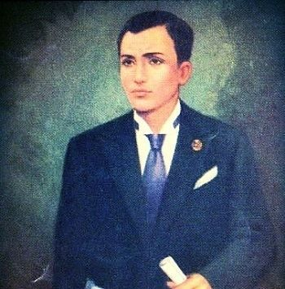
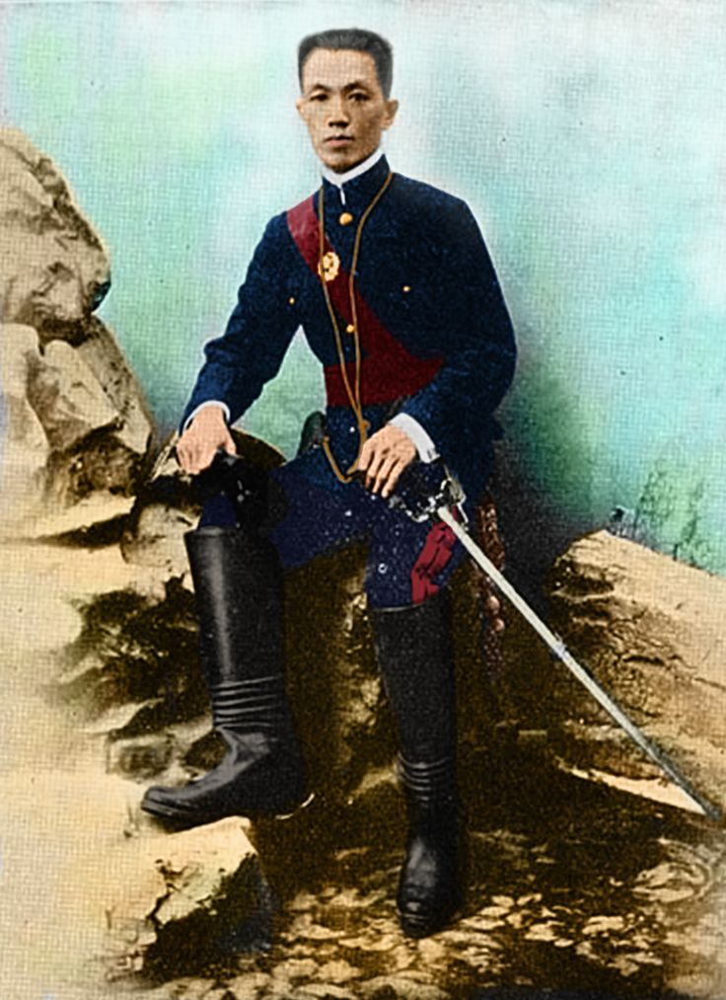
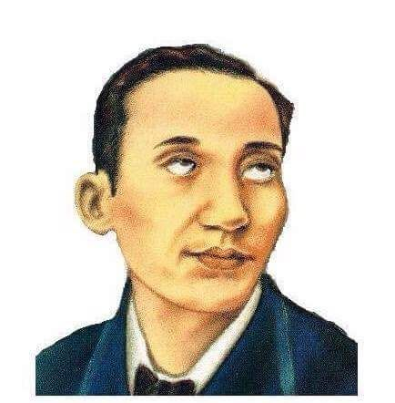

Jose Rizal
Jose Rizal was a Filipino nationalist and polymath who played a key role in the Philippines' struggle for independence during the late 19th century. He was born on June 19, 1861, in Calamba, Laguna, Philippines, which was then a colony of the Spanish Empire. Rizal was not only a revolutionary leader but also a writer, poet, and intellectual. His literary works, including novels, essays, and poems, became instrumental in awakening the national consciousness and inspiring Filipinos to seek independence from Spanish colonial rule. Two of his most famous novels are "Noli Me Tangere" and "El Filibusterismo," which exposed the injustices and abuses committed by the Spanish authorities and clergy in the Philippines. Rizal studied in various parts of the world, including Spain, where he became involved in the reform movement advocating for political and social changes in the Philippines. His writings, however, earned him the ire of the Spanish authorities, leading to his arrest and subsequent execution on December 30, 1896, in Bagumbayan (now Rizal Park or Luneta Park) in Manila. His martyrdom became a symbol of the Filipino people's struggle for independence, and he is celebrated as a national hero in the Philippines. Rizal's life and works continue to be studied and revered for their significant impact on Filipino history and identity.


Andres Bonifacio
Andres Bonifacio was a Filipino revolutionary leader and the founder of the Katipunan, a secret society that played a crucial role in the Philippine Revolution against Spanish colonial rule. He was born on November 30, 1863, in Tondo, Manila, Philippines. Bonifacio was an autodidact and worked as a warehouseman and clerk. Frustrated by the injustices and abuses under Spanish rule, he sought to establish an independent Philippine republic. On July 7, 1892, Bonifacio founded the Katipunan (short for Kataas-taasan, Kagalang-galangan na Katipunan ng mga Anak ng Bayan), a secret society aimed at uniting Filipinos to fight for independence. The Katipunan, under Bonifacio's leadership, launched the Philippine Revolution on August 23, 1896, after the discovery of their existence forced them to accelerate their plans. Bonifacio assumed the title of "Supremo" (Supreme Leader) within the organization. The revolution aimed to end Spanish colonial rule and establish a free and sovereign Philippines. However, internal conflicts within the revolutionary leadership, particularly the rivalry between Bonifacio and Emilio Aguinaldo, another revolutionary leader, led to a split in the movement. This division ultimately contributed to Bonifacio's downfall. In 1897, Bonifacio was arrested, tried, and executed on May 10, 1897, in the mountains of Maragondon, Cavite. His death marked a tragic chapter in Philippine history, but his contributions to the fight for independence and his dedication to the cause have solidified his status as a national hero in the Philippines.
Emilio Aguinaldo
Emilio Aguinaldo was a Filipino revolutionary and political leader who played a significant role in the struggle for Philippine independence from Spanish colonial rule and later became the first President of the First Philippine Republic. Aguinaldo was born on March 22, 1869, in Cavite, Philippines. He joined the Katipunan, a secret revolutionary society, led by Andres Bonifacio, in the fight against Spanish rule. After the outbreak of the Philippine Revolution in 1896, Aguinaldo quickly rose through the ranks and became a key military leader. Following internal conflicts within the Katipunan leadership, Aguinaldo emerged as a prominent figure. In 1897, the Pact of Biak-na-Bato was signed between the Spanish authorities and Filipino revolutionaries, leading to a temporary truce. Aguinaldo and other revolutionary leaders went into exile in Hong Kong. In 1898, the Spanish-American War broke out, and the United States defeated Spain. As part of the Treaty of Paris that ended the war, Spain ceded the Philippines to the United States. Aguinaldo returned to the Philippines, and tensions escalated between Filipino revolutionaries and the American forces. On June 12, 1898, Aguinaldo proclaimed Philippine independence in Kawit, Cavite, and raised the Philippine flag. This event is commemorated as Philippine Independence Day. However, the United States did not recognize Philippine independence and, instead, asserted control over the archipelago. The Philippine-American War erupted in 1899, with Filipino forces, led by Aguinaldo, resisting American colonization. Aguinaldo was eventually captured by the Americans in 1901, leading to his oath of allegiance to the United States. He retired from public life for a time but later became involved in Philippine politics. Emilio Aguinaldo was elected as the first President of the Philippine Republic in 1899, but his term was cut short by the American occupation. He continued to be involved in Philippine politics in the following years, serving in various capacities. Aguinaldo lived through many stages of Philippine history, and his legacy is complex, viewed by some as a hero of the struggle against colonial rule and by others as a controversial figure due to political and historical complexities.

Apolinario Mabini
Apolinario Mabini was a Filipino revolutionary leader, political philosopher, and the first Prime Minister of the Philippines. He was born on July 23, 1864, in Tanauan, Batangas, Philippines, and he played a crucial role in the struggle for Philippine independence against Spanish colonization. Mabini was a highly educated and intellectually gifted individual who earned a law degree from the University of Santo Tomas in Manila. However, due to a physical disability (polio) that left him paralyzed from the waist down, he was known as the "Sublime Paralytic" and the "Brains of the Revolution." During the Philippine Revolution against Spanish rule, Mabini served as the chief adviser to Emilio Aguinaldo, the leader of the revolutionary forces. He played a key role in drafting important documents, including the "Constitution of the First Philippine Republic," which was promulgated in January 1899. Mabini's ideas and principles emphasized the need for a government based on democratic and constitutional ideals. When the Philippines came under American rule after the Spanish-American War, Mabini continued to advocate for Philippine independence. However, he became critical of the American colonial administration, particularly the policies that undermined Filipino self-governance. Mabini's opposition to the Treaty of Paris, which ceded the Philippines to the United States, led to his arrest by American authorities in December 1899. He was exiled to Guam and later to the United States. He returned to the Philippines in 1903 after taking an oath of allegiance to the United States. Despite his return, Mabini continued to be critical of American policies in the Philippines. Apolinario Mabini died on May 13, 1903, at the age of 38, shortly after his return to the Philippines. His writings, including his political treatises and letters, continue to be studied, and he is regarded as one of the most important figures in Philippine history. Mabini's contributions to the development of political thought in the Philippines and his dedication to the cause of independence have earned him the title "Brains of the Revolution".
Marcelo H. del Pilar
Marcelo H. del Pilar, born Marcelo Hilario del Pilar y Gatmaitán, was a Filipino writer, journalist, lawyer, and revolutionary who played a significant role in the movement for Philippine independence during the late 19th century. He was born on August 30, 1850, in Cupang (now Bulacan), Philippines. Del Pilar was one of the leading propagandists of the Propaganda Movement, a group of Filipino intellectuals in Spain who advocated for political reforms and social justice under Spanish colonial rule. He was known for his sharp wit and biting satire, often writing under the pen name "Plaridel." Among his notable contributions to the movement was the founding of the newspaper "La Solidaridad" in 1889, which became the primary platform for expressing the grievances and aspirations of the Filipinos living under Spanish colonial rule. Del Pilar and his contemporaries, including Jose Rizal, sought to bring attention to the injustices in the Philippines and push for reforms. After Rizal's arrest and deportation, del Pilar assumed the role of editor of "La Solidaridad" and continued to use the publication to champion the cause of the Filipino people. However, internal conflicts and financial difficulties led to the eventual closure of the newspaper in 1895. Marcelo H. del Pilar returned to the Philippines in 1892 but faced threats from the Spanish authorities. He became actively involved in the revolutionary movement for Philippine independence, supporting the Katipunan led by Andres Bonifacio. Del Pilar continued his efforts even as he faced declining health. Del Pilar died on July 4, 1896, at the age of 45. His contributions to Philippine literature, journalism, and the nationalist cause have earned him a place among the country's national heroes. The town of Bulakan, where he was born, was later renamed "Marcelo H. del Pilar" in his honor.
Sultan Dipatuan Kudarat
Sultan Dipatuan Kudarat was a powerful and influential Muslim leader in Mindanao, Philippines, during the late 17th century. His full name was Sultan Muhammad Dipatuan Kudarat, and he was the Sultan of Maguindanao and a key figure in resisting Spanish colonization in Mindanao. Kudarat was known for his diplomatic skills and military prowess. He successfully organized resistance against Spanish attempts to expand their control into Mindanao, particularly in the areas of Cotabato and Davao. His leadership and strategic alliances with neighboring Muslim leaders allowed him to maintain a degree of autonomy and resist Spanish encroachment. Sultan Kudarat established a reputation as a skilled statesman and warrior. He engaged in both diplomatic negotiations and military campaigns to protect the interests and independence of Muslim communities in Mindanao. Despite facing challenges from Spanish forces, Kudarat managed to maintain a level of independence for his sultanate. Sultan Dipatuan Kudarat's resistance against Spanish colonization made him a significant historical figure in the context of Mindanao's history. His legacy is remembered for his efforts to preserve the autonomy of Muslim communities and his role in shaping the course of events during a critical period in Philippine history. Today, his name is honored in various ways, including the naming of the province of Sultan Kudarat in Mindanao.
Juan Luna
Juan Luna was a Filipino painter, sculptor, and political activist who gained international recognition for his achievements in the arts during the late 19th century. He was born on October 23, 1857, in Badoc, Ilocos Norte, Philippines, and died on December 7, 1899, in Hong Kong. Luna's early artistic talent was evident, and he pursued his education at the Academia de Dibujo y Pintura (Academy of Drawing and Painting) in Manila. In 1877, he won a scholarship to study at the Escuela de Bellas Artes in Madrid, Spain, where he further honed his skills. Juan Luna became well-known for his masterpieces, especially for his painting "Spoliarium," which won a gold medal in the Exposición Nacional de Bellas Artes in Madrid in 1884. "Spoliarium" is a massive and powerful work that depicts the bodies of fallen gladiators being dragged away from the arena. Luna's success in the arts did not confine him to the studio. He was also involved in political activism, advocating for Philippine independence from Spanish colonial rule. Along with his brother Antonio Luna and other Filipino expatriates in Spain, he became a member of the Propaganda Movement, a group seeking reforms and representation for Filipinos. In 1896, Luna returned to the Philippines to join the Katipunan, a revolutionary society fighting for independence from Spanish rule. However, he faced disagreements with other leaders, and his relationship with Andres Bonifacio, the Katipunan's founder, became strained. Luna was later assassinated in Cabanatuan, Nueva Ecija, in 1899. Juan Luna's contributions to Philippine art are celebrated, and his works continue to be displayed and admired. His legacy extends beyond his artistic achievements to his role as a patriot and advocate for Philippine independence during a critical period in the country's history.
Melchora Aquino
Melchora Aquino, commonly known as "Tandang Sora," was a Filipina revolutionary and a key figure in the Philippine struggle for independence against Spanish colonial rule. She was born on January 6, 1812, in Caloocan, Philippines, and she lived through significant periods of Philippine history. Tandang Sora is best remembered for her humanitarian and revolutionary activities during the Philippine Revolution against Spanish rule. She provided support to Filipino revolutionaries, including members of the Katipunan, by offering her home as a meeting place and a refuge for those fighting for independence. Her residence became a sanctuary for revolutionary leaders, and she earned the affectionate moniker "Tandang Sora," which translates to "Elder Sora" in English. During the Philippine-American War, Tandang Sora continued to support the revolutionary cause. However, she suffered personal tragedies, including the loss of her property and the arrest of her sons by American forces. Despite these hardships, she remained dedicated to the fight for Philippine independence. Tandang Sora's contributions to the revolution and her dedication to the cause of freedom have earned her a revered place in Philippine history. Her life and legacy are celebrated, and numerous schools, streets, and institutions in the Philippines are named in her honor. Tandang Sora passed away on February 20, 1919, leaving behind a legacy of resilience, patriotism, and selfless service to the nation.
Gabriela Silang
Gabriela Silang, born Gabriela Silang de Villanueva, was a prominent figure in the Philippine struggle for independence against Spanish colonial rule during the 18th century. She was born on March 19, 1731, in Barangay Caniogan, Santa, Ilocos Sur, Philippines. Gabriela Silang is best known for her role as the widow of the revolutionary leader Diego Silang. After Diego Silang was assassinated in 1763, Gabriela took up the leadership of the Ilocano rebels and continued the fight for Philippine independence. She became a formidable figure in the Ilocos region, leading her forces against the Spanish authorities. Gabriela Silang's leadership was marked by her commitment to the cause of freedom and justice. She collaborated with other revolutionary leaders, such as Pedro Becbec and Miguel Vicos, to organize and sustain the resistance against Spanish forces. Unfortunately, Gabriela Silang's efforts came to an end when she was captured by Spanish colonial forces. On September 20, 1763, she was executed in Vigan, Ilocos Sur. Despite the setbacks, Gabriela Silang remains a symbol of courage and resilience in the face of colonial oppression. She is remembered as one of the early Filipino women who played a significant role in the fight for Philippine independence. Today, she is honored as a national heroine, and various institutions, organizations, and streets in the Philippines are named after her.